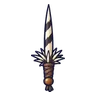
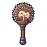

เม่นแตกตัว
มอนธาตุดิน Lv 16–22
เจอที่
| แมพ | โซน | Lv | ภูมิภาค |
|---|---|---|---|
| เนินดอกไม้กลางคืน | 16–22 | ป่ากองไฟ | |
| เนินดอกไม้กลางคืน | ซุ้มดอกไม้กลางเนิน | 21–22 | ป่ากองไฟ |
| ทุ่งหญ้าสูงท่วมหัว | วงหินกลางทุ่ง | 21–22 | ป่ากองไฟ |
| เนินกุหลาบหนาม | 16–22 | ป่ากองไฟ | |
| เนินกุหลาบหนาม | ซุ้มกุหลาบยักษ์ | 21–22 | ป่ากองไฟ |
| หอรากมืด (Dark Root) | ประตูราก | 5–14 |
ค่าสถานะตามเลเวล
| Lv | HP | ATK | DEF | MDEF | EXP | Job |
|---|---|---|---|---|---|---|
| 16 | 2,150 | 33–49 | 6 | 3 | 26 | 20 |
| 19 | 2,347 | 37–55 | 7 | 4 | 30 | 23 |
| 22 | 2,434 | 37–55 | 8 | 5 | 34 | 26 |
ตีด้วยธาตุไหนดี
แรงขึ้น: ไฟ ×1.5 พิษ ×1.25
เบาลง: ลม ×0.5 ดิน ×0.25
วัตถุดิบที่ดรอป
| ของ | โอกาส | |
|---|---|---|
| หนามเม่นขาว | 55% | 1 ชิ้น (15% ได้ 2) |
อุปกรณ์ที่ดรอป (5)
| ของ | โอกาส |
|---|---|
 มีดคู่ขนเม่น | 0.25% |
| ชุดแคมป์ปิ้ง (เสื้อ) | 0.15% |
| ชุดแคมป์ปิ้ง (กางเกง + รองเท้า) | 0.15% |
 กระบองเม่นแคระ | 0.12% |
| ชุดแคมป์ปิ้ง (แก้วสังกะสี) | 0.05% |
สกิล
หนามสะท้อน (Lv 25+) · หนามสะท้อน (Lv 60+) · ยิงไกล (Lv 60+)